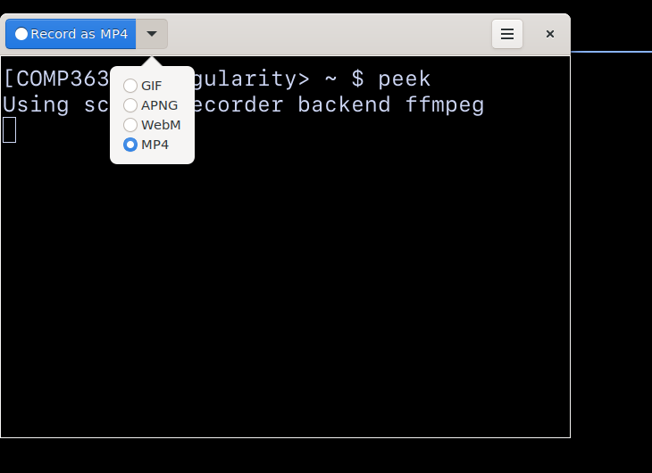

Group Project: Get Up & Running#
(IMPORTANT) Update your package#
We have made a number of changes to this package for the group project. It’s important that you update it before starting working on the project.
cd ~/ros2_ws/src/turtlebot3_simulations
git pull
cd ~/ros2_ws
rm -rf build install log
colcon build
Clone your group repo#
You should, by now, have joined a group repository on GitHub. Clone it under your workspace.
cd ~/ros2_ws/src
git clone git@github.com:COMP3631/groupX group_project
Where groupX is the name of your group.
Don’t forget to build the workspace:
cd ..
colcon build
How to run the project in simulation#
It would be wise to start working on this project in simulation first, before you attempt running your solution on a real robot.
To help you navigate the project, we provide three worlds of increasing difficulty. These are just examples. We provide instructions of how to generate new worlds.
To launch different worlds, you need to follow the following steps:
Step 1: Launch Gazebo using different worlds
ros2 launch group_project world.launch.py world:=easy
# or
ros2 launch group_project world.launch.py world:=moderate
# or
ros2 launch group_project world.launch.py world:=hard
Step 2: Launch Localisation
ros2 launch group_project navigation.launch.py world:=easy
# or
ros2 launch group_project navigation.launch.py world:=moderate
# or
ros2 launch group_project navigation.launch.py world:=hard
Step 3: Localise the robot in Rviz
As you learned in lab 4, you need to provide an initial estimate of the robot in Rviz to help it localise itself initially. Please do that through Rviz.
Step 4: Send some goal poses to the robot to help it localise better
After you provide the initial estimate, using Rviz send 1-2 goals to help the robot localise better.
Step 5: Move the robot to an initial position
Your robot may be loaded in one of the modules. For the group project, we will start your robot in the corridor. Please send a goal pose through Rviz to move the robot to one of the corners of the corridor (such that it cannot see any of the entrance red/green circles).
Step 6: Launch your solution to solve the problem
Once you start Gazebo, navigation, you localise the robot, and you move the robot to a corner of the corridor, it’s time to run your solution to solve the problem. It’s important to launch your solution using our launch file to make your script aware of the different coordinate points of the modules. Here is how:
ros2 launch group_project robotnaut_go.launch.py world:=easy
# or
ros2 launch group_project robotnaut_go.launch.py world:=moderate
# or
ros2 launch group_project robotnaut_go.launch.py world:=hard
We ask that you implement your code such that the complete solution is runnable with the above ros launch commands.
This is already a target in setup.py, you simply need to write code
in the group_project/group_project/robonaut.py file. Please feel
free to break your code down to different files, if you want to. We
simply ask that there is only one entrance point to your solution,
and that is the robonaut_go. The world:=easy part make sure to load
the right input coordinates so that your robot can travel to the right points
in space.
Input points#
As we describe in the project description, we will provide you with the (x,y) coordinates of four points: the centre and entrance points of the two modules.
These values are loaded and provided into your main program by the ros launch
file (robonaut_go.launch.py). The Robonaut
(group_project/group_project/robonaut.py) class includes some comments of how
to load and make use of the coordinate points.
Creating new worlds#
Once you build a first solution that works in the three provided worlds, we encourage you to create your own worlds to stress test your solution further. Here are some notes on how to do this.
If you create new worlds, make sure to commit and push the changes to GitHub, we will consider such custom worlds as a good sign under the requirement of creating and testing your solution for robustness.
First create the world
To create a new world, you can follow the steps outlined below within a singularity environment.
Click here to learn more
Run
export GAZEBO_MODEL_PATH=$HOME/ros2_ws/src/turtlebot3_simulations/turtlebot3_gazebo/models/.Run
gazeboto launch an empty Gazebo instance.Navigate to “Insert” tab on the left vertical menu. You will see a list of models to choose from. Start by adding walls to replicate two modules and then start adding obstacles.
Warning
Do not add a robot in the world at this point, the robot is spawned automatically by ROS using the ros launch file.
Once you are happy with your new world, click “File -> Save World As” and name it “gazebo.world”. Read the next section to find out where to put this to make it discoverable.
Note
Tips:
You may need to align the walls which can be tricky to do with the mouse. Pick one wall and place it where you want to with the mouse. Then use that wall as the reference for other walls. Click on the reference wall and make a note of its pose (x, y, z, roll, pitch and yaw) from the left panel. Then fine tune the other walls’ x, y, z, roll, pitch and yaw w.r.t to the reference wall.
When hanging windows or a poster on the wall, make sure to rotate your view when they seem to be lost. Somehow they are not visible from the back. They may also be invisible when they are in the wall. You can fine tune their position from the pose properties on the left pane.
Make the new world discoverable by the launch file
To make your newly created world discoverable by the project’s launch file,
you need to create a new directory with a unique name under
~/ros2_ws/src/group_project/worlds and few modifications to the launch file
(click to expand the section below to learn more).
Click here to learn more
If you wanted to create a new test world called easy2, you could create a
new directory under group_project/worlds named easy_2.
Your new world directory should include
the following files, with the following names:
gazebo.worldmap/map.pgmmap/map.yamlcoordinates.yaml(please refer to lab 4 worksheet on how to obtain coordinates and have a look at the providedcoordinates.yamlexamples of how to structure this file).
You then need to update group_project/launch/worlds.yaml
to append the new world:
1easy: spacecraft_easy
2moderate: spacecraft_moderate
3hard: spacecraft_hard
4real: real_world
5easy2: easy_2 # <--- your new world target here
Please note that the key (easy2) is the target you need to use to launch it,
while the value (easy_2) is the actual directory name under
group_project/worlds.
If you had a directory called ~/ros2_ws/src/group_project/worlds/my_awesome_world,
you could define the key as easy2 (target) and as value my_awesome_world (directory name),
you could then run ros2 launch group_project world.launch.py world:=easy2.
Note
Every time you create new world or you update the launch file, you will need
to run colcon build within ~/ros2_ws.
Planet Images and Alignment#
The green module of the spacecraft will contain at least two windows with “views” of the Earth and the Moon. These have been constructed from the database of “Moons and Planets” that can be found at: emirhanai/Planets-and-Moons-Dataset-AI-in-Space
Other windows could also be found in the module with views of different planets also constructed from this database. The module may also contain a poster with images of several different planets on it.
The “views” of the Earth and Moon have been created so that they overlap to
enable you to stitch them together. You may find that you cannot just use
random stars to align the images as they are too similar to each other. We have
therefore provided a further method find_transform in the module
AJBastroalign.py that you can use to do this. This works by matching patterns
of three stars rather than individual stars to provide the salient feature to
match on. There are lots of other methods available if you prefer to use
another.
Click here to see an example of the AJBastroalign module
To use this module you need to first import it using the following line of code:
1from group_project import AJBastroalign
You can then use a similar approach to the OpenCV one you used in the labs. Below is an example.
1#Assumes you have some keypoints (l_keypoints and r_keypoints) in the left and
2# right images respectively
3
4# convert keypoint to numpy array
5# In this case source is the right hand image
6# right_image is transformed to the target (left image)
7
8source = np.asarray([[p.pt[0], p.pt[1]] for p in r_keypoints])
9target = np.asarray([[p.pt[0], p.pt[1]] for p in l_keypoints])
10
11transform,(src_pts,dst_pts) = AJBastroalign.find_transform(source, target, max_control_points=250)
12
13
14# If you want to display the points and the matches found
15plt.plot(src_pts[:, 0], 1240 - src_pts[:, 1], "xk", markersize=10)
16plt.plot(dst_pts[:, 0], 1240 - dst_pts[:, 1], "og", markersize=10)
17
18# Display correspondences
19for i in range(len(src_pts)):
20 plt.plot([src_pts[i, 0], dst_pts[i, 0]],
21 [1240-src_pts[i, 1], 1240-dst_pts[i, 1]], "-r")
22
23plt.show()
24
25# To diplay the matrix you can use
26print("Transform",transform)
27
28# and for its components
29print("Translation ",transform.translation)
30print("scale ",transform.scale)
31print("rotation angle ", transform.rotation)
32
33# Convert transform to form OpenCV can use
34homography = np.matrix(transform, np.float32)
35
36# Apply transform to right image
37result = cv2.warpPerspective(right_img, homography, (left_img.shape[1]+400, left_img.shape[0]),flags=cv2.INTER_LINEAR)
Saving images#
To take pictures from the camera view of the robot (whether in simulation or not):
ros2 run image_view image_view image:=/camera/image_raw
Right clicking in the window will save the current image. It can be useful to obtain pictures from simulation and real-world to fine tune your CV algorithm.
How to use Python and supporting files in your project#
Python files
Python files that you need to import into your program should go under
group_project/group_project next to existing Python files. For example, if
you have a file called my_file.py that defines MyClass, it should live next
to robonaut under group_project/group_project (or in a sub-directory) and
you can import it in robonaut.py like so:
1from group_project.my_file import MyClass
Other files
However, if you need other files (other than Python files, like text files,
config files, image files etc) you can place those
files under group_project/supporting_files. Next time you
colcon build those files will become available to ROS.
Let’s say you have a file called hello.txt under supporting_files,
you can read it like so (and it will work on any computer):
1import os
2from ament_index_python.packages import get_package_share_directory
3
4package_path = get_package_share_directory('group_project')
5hello_path = os.path.join(package_path, 'supporting_files', 'hello.txt')
6with open(hello_path) as hello_file:
7 # do something with the hello_file
Recording video in simulation#
We installed a screen recording tool in the container called peek for this.
You can run it from the CLI within the container like so:
peek
Please make sure to change the default setting from gif to mp4:

Real Robot#
Most of the technical details about how to operate the real robot can be found in this page and in the lab 6 worksheet. These two pages will become available in Week 6.
But you can find a high-level step-by-step process below:
Connect to the robot via ssh and launch its drivers, as outlined here.
Set up your PC to talk with the robot you are using, as outlined here.
Run your
lab6noderos2 run lab6 compressed_to_image_raw(on the PC).Generate a map of the real-world and save it under
worlds/real_world/mapwith the namemap.Launch localisation and navigation with the saved map you generated previously.
Use Rviz to obtain the 4 points (entrance of room 1, entrance of room 2, centre of room 1 and centre of room 2) and update the file
worlds/real_world/coordinates.yaml.Provide an initial pose estimate for the robot in Rviz and also send few goal positions to better localise the robot.
Send the robot to a starting position (corridor).
Run your solution using the provided launch file (i.e.
ros2 launch group_project robonaut_go.launch.py world:=real).